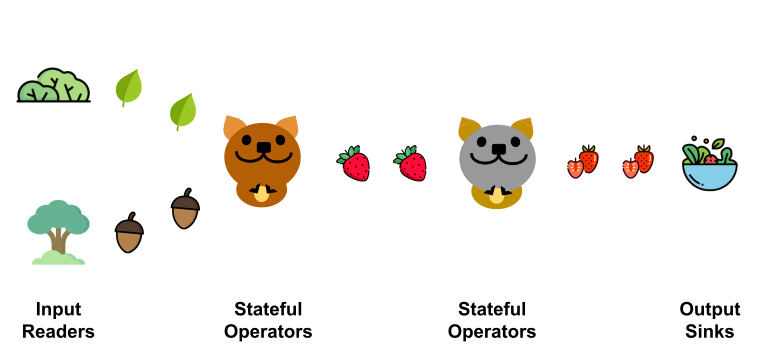
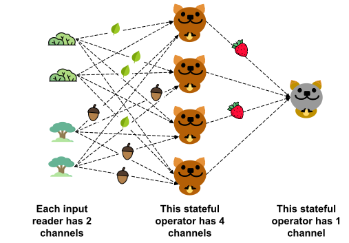
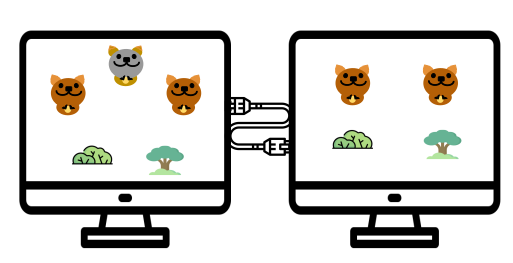

Getting Started
Quokka in Three Cartoons
The fundamental concept in Quokka is a stream of Polars DataFrames, which we call a DataStream. A Polars DataFrame is basically a Pandas DataFrame, except that it's backed by Apache Arrow and supports fast compute with Polars. Readers familiar with Spark RDDs can interpret a DataStream as an RDD where data partitions are materialized in sequence. In contrast to Spark, partitions can be consumed as soon as they are generated. This facilitates pipelining between multiple data processing stages and is the primary reason why Quokka is fast.
The user defines input readers that generate a DataStream from a dataset. For example, Quokka's cloud CSV reader generates a DataStream from an S3 bucket of CSV files. The user can also define stateful operators that operate on one or more DataStreams to produce one more DataStream. Finally a DataStream could be written to an output sink, which could be a distributed in-memory dataset that can be converted to Pandas or stable storage on disk or S3.

In this illustration, the bush produces a DataStream of leaves and the forest produces a DataStream of acorns. The brown quokka consumes those two streams and magically turn it into a stream of strawberries. The grey quokka takes in this stream of strawberries, slices them up and puts them in a salad bowl.
Unfortunately, people like us can't slice strawberries for a living and have to process tables of numbers. Quokka exposes useful primitives that allow you to filter, aggregate and join DataStreams, similar to what you can do in Pandas or Spark. Please look at the tutorials to learn more.
It would be a dismal world if there is only one quokka of each kind. Quokka supports parallelism for stateful operators with channels, which are parallel instantiations of a stateful operator to achieve data parallelism. Input sources can also have channels to parallelize the reading of a data source. For example, we can have two bushes and two forests, and four brown quokkas.

While the user can manually specify the number of channels they want for operators, in most cases it's automagically decided for you based on what you are doing, similar to Spark.
At its core, Quokka uses Ray actors. Each channel in an input source or stateful operator constitutes an actor that can be scheduled independently to a machine in a cluster. Actors on the same machine talk to each other through memory while actors on different machines communicate through the network. An example scheduling of our quokkas is shown below.

The user also shouldn't have to worry about this scheduling in most cases if using the DataStream API. However I couldn't resist making this cartoon, and it might be cool to know how Quokka works under the hood.
Installation
If you plan on trying out Quokka for whatever reason, I'd love to hear from you. Please send an email to zihengw@stanford.edu or join the Discord.
Quokka can be installed as a pip package:
pip3 install pyquokka
However it needs the latest version of Redis (at least 7.0), which you can get by running the following:
curl -fsSL https://packages.redis.io/gpg | sudo gpg --dearmor -o /usr/share/keyrings/redis-archive-keyring.gpg
echo "deb [signed-by=/usr/share/keyrings/redis-archive-keyring.gpg] https://packages.redis.io/deb $(lsb_release -cs) main" | sudo tee /etc/apt/sources.list.d/redis.list
sudo apt-get update
sudo apt-get install redis
If you only plan on running Quokka locally, you are done. Here is a 10 min lesson on how it works.
If you are planning on reading files from S3, you need to install the awscli and you have your credentials set up.
If you plan on using Quokka for cloud by launching EC2 clusters, there's a bit more setup that needs to be done. Currently Quokka only provides support for AWS. Quokka provides a utility library under pyquokka.utils which allows you to manager clusters and connect to them. It assumes that awscli is configured locally and you have a keypair and a security group with the proper configurations. To set these things up, you can follow the AWS guide.
More detailed instructions can be found in Setting Up Cloud Cluster.
Quokka also plans to extend support to Docker/Kubernetes based deployments based on KubeRay. (Contributions welcome!)
Image credits: some icons taken from flaticon.com.